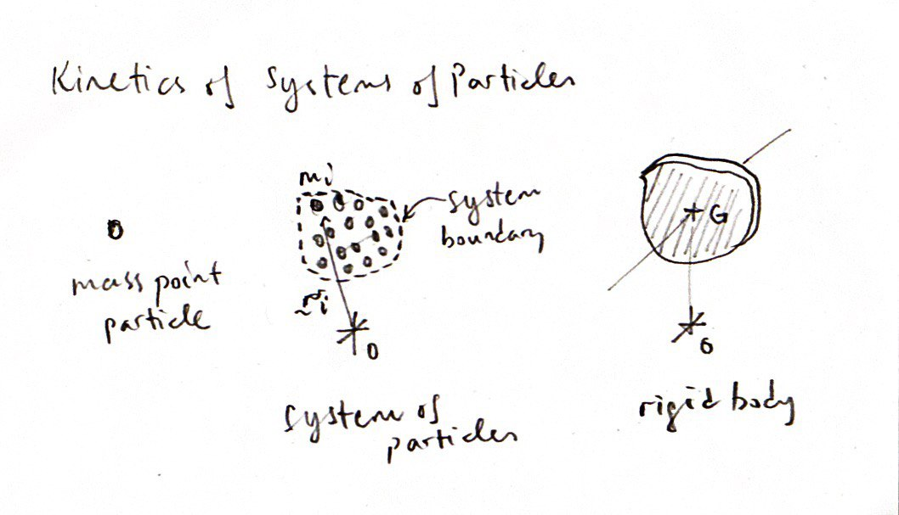
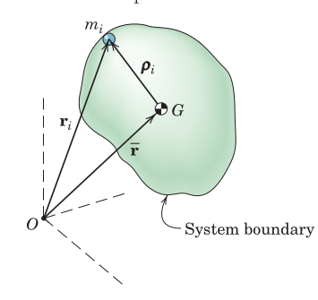
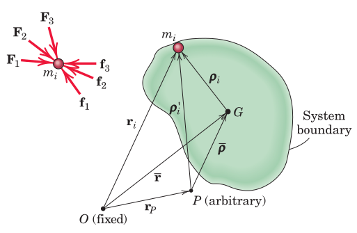

The evolution from particle mechanics to mechanics of rigid bodies.

The kinetic energy of a group of particles can be expressed in terms of their relative velocities measured in a non-inertial frame.
The linear momentum and moment of momentum (angular momentum) of a group of particles can be determined
[freehand depiction of the particle \(i\), the center of mass \(G\), and the inertial origin \(O\), with position vectors connecting them to each other]
Moment of linear momentum can also just be called moment of momentum, or angular momentum.

Here the moment of momentum is expressed using the position vectors taken from a fixed (inertial) point \(O\).
Balance of Moment of Momentum
The balance of moment of momentum expression required the time derivative of the moment of momentum as well as the moment of external forces about \(O\).
The moment of momentum can be expressed using relative velocities and accelerations of the particles about their center of mass, \(G\).
Balance of Moment of Momentum
The moment of momentum can also be expressed using the relative velocities and accelerations with respect to an arbitrary non-inertial point, \(P\), via its relation with the center of mass, \(G\).
Balance of Moment of Momentum
The time derivative of the moment of momentum relative to \(G\) can be taken.
Alternative Expression About Point \(P\)
The moment of momentum about point \(P\) can also be expressed using position vectors from point \(P\) (without reference to the centre of mass \(G\))
Balance of Momentum Using the Alternative Expression